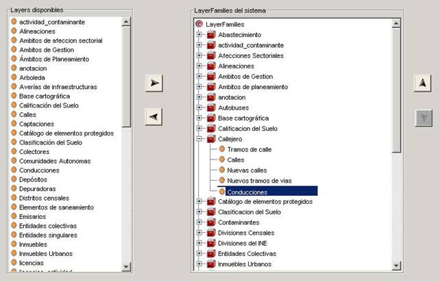
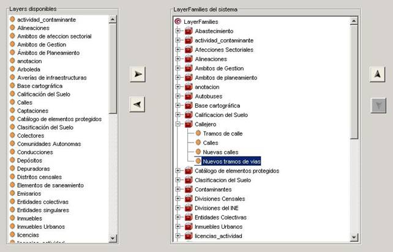

El proceso de eliminación consta de los siguientes pasos:
En el árbol de Familias de capas del Sistema, desplegar el nodo de la familia de capas sobre la que se va a realizar la operación, y seleccionar la capa a eliminar.

Pulsar el botón . La capa habrá desaparecido visualmente del árbol de las familias de capas.

Una vez finalizado el proceso, pulsando el botón Guardar se almacenarán los cambios realizados, obteniendo un mensaje informativo si la operación se completa correctamente, y un mensaje de error explicativo en caso de encontrar algún problema.
 . La capa habrá desaparecido visualmente del árbol de las familias de capas.
. La capa habrá desaparecido visualmente del árbol de las familias de capas.